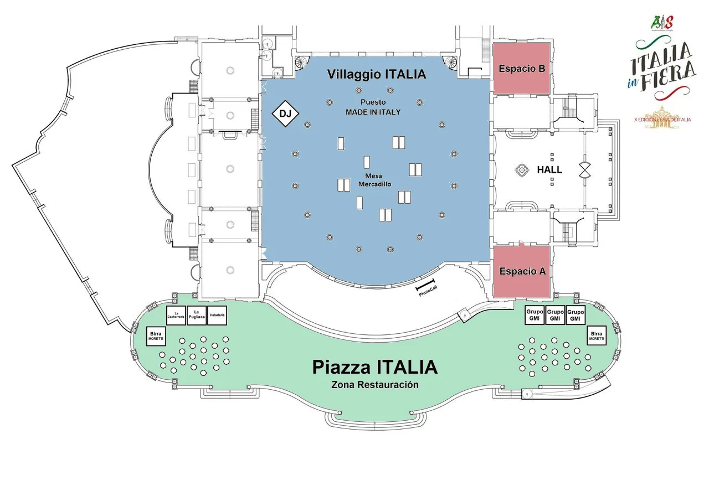
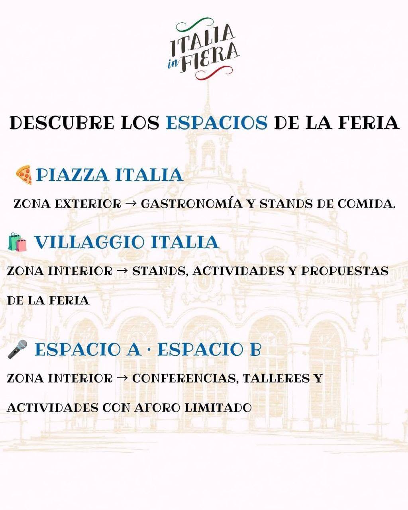

Espacios · Italia in Fiera 2026
{{ nHome }}
{{ nProg }}
{{ nFoto }}
{{ nGal }}
{{ nEsp }}
{{ nDove }}
{{ nSpon }}
{{ nCont }}
ES
IT
{{ eyebrow }}
{{ title }}
{{ s.zone }}
{{ s.name }}
{{ s.desc }}
{{ mapTitle }}

{{ regTitle }}
{{ regBody }}
{{ ctaProg }}
